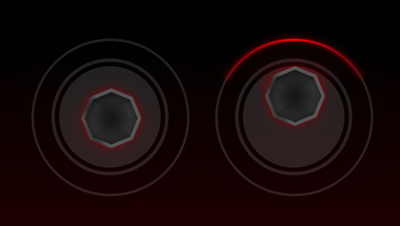
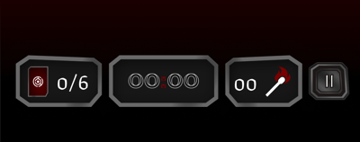

The game started from a game jam prompt generated with ChatGPT, with a deadline of 31 December 2023:
Theme
Monster Escape
Description
The player is stuck in a dark maze and must escape before the monster reaches them. The monster is lethal, so they must move fast and hide when it is close. The labyrinth’s many paths and obstacles can be used to block the monster and help the escape.
Rule
The game has to be created for mobile.
Reference: a glowing labyrinth in the dark, the mood of light against darkness.Low-poly reference: a landscape with cliffs, trees and animals.Low-poly reference: a village seen from above.
Platform, users & style
Platform: Android mobile.
Players: casual players who enjoy high-tension monster-chase games such as Slender Man and Amnesia, and roguelike players who like trying again and again to win.
Style: a top-down labyrinth game with a close camera that changes perspective in specific situations (when hiding and when the monster catches you). Players only see as far as their torch illuminates, so light and dark are the central concept. Assets follow a low-poly art style.
Story, built with AI
We used ChatGPT to draft the story skeleton, then curated it. Each prompt produced a version, and our decisions between rounds shaped the game.
Prompt 1 · Theseus
A young adventurer, Theseus, enters an ancient labyrinth with a torch, flees the Minotaur and escapes by hurling a rope-tied stone at it.
Decision: we renamed the hero Alex.
Prompt 2 · Alex
Alex is chased through darkening corridors, throws his torch at a fragile wall to open a secret passage, and ends up facing the monster.
Decision: the monster is already loose in the labyrinth.
Prompt 3 · Pursued
With the Minotaur already roaming free, Alex must keep his torch lit to see the way and avoid traps while it hunts him relentlessly.
Final story. Alex, a young adventurer, hears of an ancient labyrinth in the city centre from which no one has returned. He enters with a torch. The air grows damp, the walls rise, and a roar echoes: a giant bull-like monster with sharp claws and blazing eyes is hunting him. At a dead end he throws his torch at a fragile wall and escapes through a secret passage, running toward the sunlight. At the exit, a rope tied to a heavy stone puts the Minotaur out cold. He leaves with the torch still lit, knowing the experience will make him braver.
From this story we created the characters, mechanics and style of the game.
Characters
Player
Alex, the adventurer
About 25, lean but surprisingly strong, with brown hair and a stubble beard. A thrill-seeker who is quick and never gives up. He enters the labyrinth ill-equipped, armed only with a torch, so resourcefulness is his real tool.
Enemy
The Minotaur
A massive, muscular red bull-like beast with a permanent angry expression, human hands larger than normal, ox legs, a huge axe and piercing black eyes. Its sight is poor in the constant dark, so it has memorised the whole maze as a mental map.
Ally · WIP
Exodia (working name)
The fractured beast of light, inspired by Yu-Gi-Oh’s Exodia: the player summons it by collecting 6 cards. The Minotaur’s arch-nemesis, and the only thing that can stop it for good and clear the way to the exit. A counter tracks the cards collected.
Gameplay
Movement
The player moves with a D-pad. The character always looks forward and can’t walk backwards. The top-down camera follows and rotates with the character, so the chosen path is always “forward”. The torch lights everything the player can see.
The torch is the whole game
Put out the torch
Hide from a nearby Minotaur, at the price of almost all visibility.
Light the torch
See where you’re going, but be visible to the Minotaur. Costs one match.
Throw the torch
Lure the Minotaur: throw it down one branch of a fork and run the other way, and the monster follows the light and loses you. It also breaks fragile walls.
Pick up the torch
Fixes the light to the character again.
Enemy AI
The Minotaur is a state machine, designed so the chase feels fair and tense.
StateIdle
→
StatePatrollingsmart or random target
→
Player foundRoarpause in place
→
StateChasing
→
StateAttackingside camera + quick-time event
→
StateStunned10 seconds
→
StateIdle
If the Minotaur loses sight of the player while chasing, it returns to Patrolling. If it never finds the player, it keeps patrolling.
Idle. The Minotaur’s basic resting state.
Patrolling. “Smart” patrolling keeps the game interesting. It walks either to a completely random point of the maze or to a point 20 units from the player. On arrival it picks a new point, so the patrol varies between smart and random. A point must be reachable to be valid.
Chasing. It heads for the player, who can hide in hiding places, throw the torch, or turn it off. Reaching the player triggers an attack.
Attacking. When the player is within reach, the camera switches to a side view and movement controls are disabled. The player must tap the right points on screen to escape. Success stuns the Minotaur.
Stunned. It stops for 10 seconds. Meanwhile Alex runs randomly through the maze out of the player’s hands, and a light shows the path to the exit.
Win & loss, counters
Win
Find the labyrinth exit, or find all 6 Exodia cards.
Lose
The Minotaur gets Alex: a quick-time event gives one chance to dodge by tapping where indicated. Failing is Game Over. Succeeding reveals the exit path with a light and Alex runs randomly while the Minotaur is stunned. A trap: falling into one is Game Over.
Counters
Matches: counts down as they’re used. Cards: collected out of 6. Time: counts up while finding the exit.
Level design
The labyrinth with all of its interactions is laid out on the project’s Miro board (see link at the top).
Collectibles
Cards (6): collecting them all summons Exodia. Matches (14): scattered through the labyrinth and used to relight the torch, so the player always has to decide when light is worth the cost.
Traps
Only Alex is affected; the Minotaur is immune. Wall traps: spikes come out of the walls. Floor traps: the floor opens onto a fire pit. Disarming traps is still to be defined.
Floor trap: the floor opens to reveal a fire pit under Alex.Annotated labyrinth map from the Miro board (legend in Portuguese): exit path, alternative paths, rooms, Exodia parts, matches, breakable walls, hiding places, traps and trap-disarming buttons.Labyrinth map. The playable prototype uses this layout: play it.
User interface
Level interactions
Disarm traps
Find the button that matches the colour of the fire or spikes to disarm the trap.
Breakable walls
Walls the player can break by throwing the torch into them.
Hiding spots
Places with a mysterious purple fog where not even the Minotaur dares to step. The player can hide there with the torch on.
Style and elements
A semi-realistic, heavy UI of stone and energy, even though the experience itself is meant to be simple. Typography should resemble medieval to ancient Greece: light, serif, easy to read in small elements and very structured in others, to complement the low-poly style. Tilt Prism is used for titles and big texts and Texturina for small texts and buttons.
Buttons
Buttons have sharp angles and uneven corners to resemble physical rock buttons, with borders that simulate an inward, downward motion when active.
Button example: sharp angles and uneven corners, like a rock button.
D-pad
The D-pad resembles a diamond on a transparent energy pad. When it moves, a red halo appears in the direction it is moved.

D-pad example: a diamond on a transparent energy pad, with a red halo in the direction of movement.
Icons
To read well and stand out from the dark UI elements, icons are simple and do not resemble the grounded style of the rest of the UI.
Icon example: the torch, simple and readable against the dark UI.
Panels
Information panels resemble the button style but are clearly non-interactive and purely informational.

Counter panels, which are informational only, next to the pause button.
Menus and indicators
Menus are simple, with obvious interactions and clear text on what the player is doing, over a dark red gradient that adds to the mood. When the Minotaur is close, a vibrant red vignette over the whole screen shows its direction, with sound cues: Minotaur breathing, footsteps and a despair sound.
Pause menu: simple, obvious interactions on a dark red gradient.